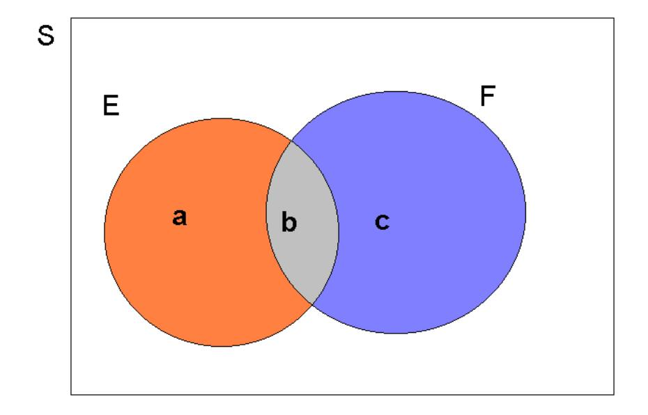

7 Introducing Probability
7.1 Introduction
This video gives a brief introduction into why economists and social scientists should study probabilities (YouTube, 4min).
So far we have been looking at ways of summarising samples of data drawn from an underlying population of interest. Although at times tedious, all such arithmetic calculations are fairly mechanical and straightforward to apply. To remind ourselves, one of the primary reasons for wishing to summarise data is so assist in the development of inferences about the population from which the data were taken. That is to say, we would like to elicit some information about the mechanism which generated the observed data.
Perhaps you can recall this little schematic which we discussed in the introduction.

We now start on the process of developing mathematical ways of formulating inferences and this requires the use of probability. This becomes clear if we think back to one of the early questions posed in this course: “prior to sampling is it possible to predict with absolute certainty what will be observed?” The answer to this question is “no”; although it would be of interest to know how likely it is that certain values would be observed. Or, what is the probability of observing certain values?
Before proceeding, we need some more tools:
7.2 Venn diagrams
Venn diagrams (and diagrams in general) are of enormous help in trying to understand, and manipulate probability. We begin with some basic definitions, some of which we have encountered before.
Experiment: any process which, when applied, provides data or an outcome; e.g., rolling a dice and observing the number of dots on the upturned face; recording the amount of rainfall in Manchester over a period of time.
Sample Space: set of possible outcomes of an experiment; e.g., \(S\) (or $$) \(=\) \(\{1,2,3,4,5,6\}\), which is the sample space of rolling a dice. Or \(S=\{x;x\geq 0\}\), which is the sample space of an experiment where the outcomes can be any real non-negative number, or the set of real non-negative real numbers.
Simple Event: just one of the possible outcomes on \(S\)
Event: a subset of \(S\), denoted \(E\subset S\); e.g., \(E=\left\{ 2,4,6\right\}\) (i.e. any even number on a dice) or \(E=\left\{ x;4<x\leq 10\right\}\), which means “the set of real numbers which are strictly bigger than \(4\) but less than or equal to \(10\)”.
Note that an event, \(E\), is a collection of simple events. You will have to decide what your event of interest is and that depends on the situation.
Such concepts can be represented by means of the following Venn Diagram:

The sample space, \(S\), is depicted as a closed rectangle, and the event \(E\) is a closed loop wholly contained within \(S\) and we write (in set notation) \(E\subset S\).
In dealing with probability, and in particular the probability of an event (or events) occurring, we shall need to be familiar with unions, intersections and complements.
To illustrate these concepts, consider the sample space \(S=\{x;x\geq 0\}\). In this example the sample space represents an infinite set of numbers. Don’t let the square finite sample space, represented in the next Figure, distract you from that. The following events defined on \(S\), as depicted in the Figure:
\(E=\{x;4<x\leq 10\},\,F=\{x;7<x\leq 17\},\,G=\{x;x>15\},\,H=\{x;9<x\leq 13\}\).

Note that the size of the graphical representation does not represent any probabilities here.
- Event \(E\): This graphical representation merely illustrates that \(E\) is a subset of \(S\), \(E\subset S\)
- Union: \(E\cup F\)
The union of \(E\) and \(F\) is denoted \(E\cup F\), with \(E\cup F=\{x;4<x\leq 17\}\); i.e., it contains elements (simple events) which are either in \(E\) or in \(F\) or (perhaps) in both. This is illustrated on the Venn diagram by the dark shaded area in diagram (b).
- Union: \(E\cup F\)
- Intersection: \(E\cap F\)
The intersection of \(E\) and \(F\) is denoted \(E\cap F\), with $EF={ x;7x} $; i.e., it contains elements (simple events) which are common to both \(E\) and \(F\). Again this is depicted by the dark shaded area in (c).
- Intersection: \(E\cap F\)
- The Null set/event: $EG=$
If events have no elements in common (as, for example, \(E\) and \(G\)) then they are said to be mutually exclusive, and we can write \(E\cap G=\emptyset\), meaning the null set which contains no elements. Such a situation is illustrated on the Venn Diagram by events (the two shaded events in (d)) which do not overlap. Notice however that \(G\cap F\neq \emptyset\), since \(G\) and \(F\) have elements in common.
- The Null set/event: $EG=$
- Complement of \(E\): \(\bar{E}\)
The complement of an event \(E\), say, is everything defined on the sample space which is not in \(E\) This event is denoted \(\bar{E}\), the dark shaded area in (e); here \(\bar{E}=\left\{ x;x\leq 4\right\} \cup \left\{ x;x>10\right\}\). An alternative notation that is sometimes used for the complement of an event \(E\) is \(E^c\).
- Complement of \(E\): \(\bar{E}\)
- Subset of \(F\): \(H\subset F\) and \(H\cap F=H\)
Finally note that \(H\) is a sub-set of \(F\); see (f). It is depicted as the dark closed loop wholly contained within \(F\), the lighter shaded area, so that \(H\cap F=H\); if an element in the sample space is a member of \(H\) then it must also be member of \(F\). (In mathematical logic, we employ this scenario to indicate that “\(H\) implies \(F\)”, but not necessarily vice-versa.) Notice that $GH=$ but \(H\cap E\neq \emptyset\).
- Subset of \(F\): \(H\subset F\) and \(H\cap F=H\)
This video goes through most elements of the above example (YouTube, 8min).
7.3 Probability
The term probability is used in everyday conversation. Watching the daily news, for instance, you will come across weather forecasts which will often include probabilistic statements like “There is a 70% probability of rain for tomorrow.” Here is a video on weather forecasts and an incredibly interesting podcast on the importance of communicating uncertainty in weather forecasts (38 min).
Other areas where we use probabilities are sports (What is the probability of England winning the World Cup) games of chance (e.g. roulette or poker) or economics (What is the probability of a recession?). What you will do now is to learn about a coherent theory of probability; a theory which allows us to combine and manipulate probabilities in a consistent and meaningful manner. You will describe ways of dealing with, and describing, uncertainty. This will involve rules which govern our use of terms like probability.
Communicating probabilities, or uncertainty is one of the great challenges of scientists, economists and data analysts. Dealing in uncertainties is what we do. But often the people we are communicating to and with do not want to hear uncertainties, they want certainties. Will it rain tomorrow? Yes or No! Will my employer go out of business? Yes or no! Will the Conservatives be able to lead the government after the next election? Yes or no! Will this investment be profitable? Yes or no! Will the Apple share price go up? yes or no!
Despite the thirst for certainty you will have to find ways to communicate uncertainty which both, conveys the right information (including the level of certainty you have), is understandable to the public, and protects your reputation. It turns out that this is a great challenge.
Here is a great document on communicating uncertainty by Full Fact and a lecture on this issue (60 min) by the excellent David Spiegelhalter and a website he initiated.
This is supplementary and non-assessed information.
There have been a number of different approaches (interpretations) of probability. Most depend, at least to some extent, on the notion of relative frequency as now described:
- Suppose an experiment has an outcome of interest \(E\). The relative frequency interpretation of probability says that assuming the experiment can be repeated a large number of times then the relative frequency of observing the outcome \(E\) will settle down to a number, denoted \(\Pr (E)\), \(P(E)\) or Prob\((E)\), called the probability of \(E\).
This is illustrated in the next Figure where the proportion of heads obtained after \(n\) flips of a fair coin is plotted against \(n\), as \(n\) increases; e.g., of the first 100 flips, 46 were heads (\(46\%\)). Notice that the plot becomes less `wobbly’ after about \(n=140\) and appears to be settling down to the value of \(\frac{1}{2}\).

Due to this interpretation of probability, we often use observed sample proportions to approximate underlying probabilities of interest. There are, of course, other interpretations of probability; e.g., the subjective interpretation which simply expresses the strength of one’s belief about an event of interest such as whether Liverpool will win the Premier League! Any one of these interpretations can be used in practical situations provided the implied notion of probability follows a simple set of axioms or rules.
7.3.1 The axioms of probability
There are just three basic rules that must be obeyed when dealing with probabilities:
- For any event \(E\) defined on \(S\) i.e., \(E\subset S,\,\,\Pr (E)\geq 0\); probabilities are non-negative.
- \(\Pr (S)=1\); having defined the sample space of outcomes, one of these outcomes must be observed.
- If events \(E\) and \(F\) are mutually exclusive defined on \(S\), so that $EF=$, then \(\Pr \left( E\cup F\right) =\Pr \left( E\right)+\Pr \left( F\right)\). In general, for any set of mutually exclusive events, \(E_{1},E_{2},\ldots ,E_{k}\), defined on \(S:\)
\[\begin{equation*} \Pr (E_{1}\cup E_{2}\cup \ldots \cup E_{k})=\Pr (E_{1})+\Pr (E_{2})+\ldots\Pr (E_{k}) \end{equation*}\]
i.e., \(\Pr \left( \bigcup_{j=1}^{k}E_{j}\right) =\sum_{j=1}^{k}\Pr (E_{j})\).
In terms of the Venn Diagram, one can (and should) usefully think of the area of \(E\) relative to that of \(S\) as providing an indication of probability. (Note, from axiom 2, that the area of \(S\) is implicitly normalised to be unity).
Also observe that, contrary to what you may have believed, it is not one of the rules that \(\Pr (E)\leq 1\) for any event \(E\). Rather, this is an implication of the three rules given:
It must be that for any event \(E\), defined on \(S\), $E{E}=$ and \(E\cup \bar{E}=S\). By Axiom 1, \(\Pr (E)\geq 0\) and \(\Pr \left( \bar{E}\right) \geq 0\) and by Axiom 3, \(\Pr(E)+\Pr (\bar{E})=\Pr (S)\). So \(\Pr \left( E\right) +\Pr \left( \bar{E}\right) =1\) by Axiom 2. This implies that
- \(0\leq \Pr (E)\leq 1\)
- \(\Pr (\bar{E})=1-\Pr (E)\)
The first of these is what we might have expected from probability (a number lying between \(0\) and \(1\)). The second implication is also very important; it says that the probability of \(E\) not happening is one minus the probability of it happening. Thus when rolling a die, the probability of getting \(6\) is one minus the probability of getting either a \(1\), \(2\), \(3\), \(4\) or \(5\).
These axioms imply how to calculate probabilities on a sample space of equally likely outcomes. For example, and as we have already noted, the experiment of rolling a fair dice defines a sample space of six, mutually exclusive and equally likely outcomes (1 to 6 dots on the up-turned face). The axioms then say that each of the six probabilities are positive, add to 1 and are all the same. Thus, the probability of any one of the outcomes must be simply \(\frac{1}{6}\); which may accord with your intuition.
A similar sort of analysis reveals that the probability of drawing a club from a deck of 52 cards is \(\frac{13}{52}\) since any one of the 52 cards has an equal chance of being drawn and 13 of them are clubs; i.e., 13 of the 52 are clubs, so the probability of drawing a club is \(\frac{13}{52}\). Notice the importance of the assumption of equally likely outcomes here.
In what follows you shall see how these axioms can be used. Firstly, consider the construction of a probability for the union of two events; i.e., the probability that either \(E\) or \(F\) or (perhaps) both will occur. Such a probability is embodied in the addition rule of probability.
7.3.2 The addition rule of probability
Let us begin with an example.
7.3.2.1 Example
When rolling a fair dice, let \(E\) denote the event of an “odd number of dots” and \(F\) the event of the “number of dots being greater than, or equal, to \(4\)”.
\(E = \{1,3,5\}\), \(Pr(E) = \frac{3}{6}=0.5\)
\(F = \{4,5,6\}\), \(Pr(F) = \frac{3}{6}=0.5\)
What is the probability of the event \(E\cup F\)? To calculate this we can collect together all the mutually exclusive (simple) events which comprise \(E\cup F\), and then add up the probabilities (by axiom 3).
\(E\cup F = \{1,3,4,5,6 \}\), \(Pr(E\cup F) = \frac{5}{6}\)
\(E\cap F = \{5\}\), \(Pr(E\cap F) = \frac{1}{6}\)
Each of the simple events has a probability of \(\frac{1}{6}\) so the required total probability is: \(\Pr \left( E\cup F\right) =\frac{5}{6}\). Consider carefully how this probability is constructed and note, in particular, that $( EF) ( E) +( F) $ since \(E\) and \(F\) have a simple event in common (namely 5 dots). As you will see shortly, \(\Pr \left( E\cup F\right) = \Pr \left( E\right) +\Pr \left( F\right) - \Pr(E \cap F)\).
This video goes through the above brief example (YouTube, 5min).
In general, we can calculate the probability of the union of events using the addition rule of probability, as follows.
- For any events, \(E\subset S\) and \(F\subset S:\Pr (E\cup F)=\Pr (E)+\Pr (F)-\Pr (E\cap F)\). So, in general, \(\Pr \left( E\cup F\right) \leq \Pr (E)+\Pr (F)\).
We can demonstrate this as follows. Note that
\[\begin{equation*} E\cup F=\left( E\cap \bar{F}\right) \cup \left( E\cap F\right) \cup \left(\bar{E}\cap F\right) \end{equation*}\]
the union of three mutually exclusive events. These mutually exclusive events are depicted by the shaded areas \(\mathbf{a}\), \(\mathbf{b}\) and \(\mathbf{c}\), respectively, in the next Figure.

Then by Axiom 3, and from the fact that the three events $( E{F}) $, $( EF) $ and \(\left( \bar{E}\cap F\right)\) are mutually exclusive so that the “area” occupied by \(E\cup F\) is simply \(\mathbf{a+b+c}\),
\[\begin{equation*} \Pr \left( E\cup F\right) =\Pr \left( E\cap \bar{F}\right) +\Pr \left( \bar{E}\cap F\right) +\Pr \left( E\cap F\right) . \end{equation*}\]
But also by Axiom 3, since $E=( E{F}) (EF) $, it must be that \(\Pr (E)=\Pr \left( E\cap \bar{F}\right)+\Pr (E\cap F)\); similarly, \(\Pr \left( \bar{E}\cap F\right) =\Pr \left(F\right) -\Pr \left( E\cap F\right)\). Putting all of this together gives
\[\begin{equation*} \Pr (E\cup F)=\Pr (E)+\Pr (F)-\Pr (E\cap F). \end{equation*}\]
This was a lengthy probabilistic argument to make sense of the probability addition formula. You may wonder why the addition formula is not just \(\Pr (E\cup F)=\Pr (E)+\Pr (F)\)? You can refer back to the image above. If we just added \(\Pr (E)\) and \(\Pr (F)\) we would have double counted area b. We therefore have to subtract it once. And area b is \(\Pr (E\cap F)\).
When \(E\) and \(F\) are mutually exclusive, then there is no overlap, so that \(E\cap F=\emptyset\), this rule reveals Axiom 2: \(\Pr (E\cup F)=\Pr (E)+\Pr (F)\).
You will often be presented with frequency (count) tables of the following type.
| Region | Very good health | Good health | Fair health | Bad health | Very bad health | Sum |
|---|---|---|---|---|---|---|
| North East | 11,425 | 8,795 | 3,977 | 1,476 | 428 | 26,101 |
| North West | 32,413 | 23,502 | 9,847 | 3,842 | 1,083 | 70,687 |
| London | 20,086 | 18,302 | 7,476 | 2,376 | 701 | 52,943 |
| Sum | 67,924 | 50,599 | 21,300 | 7,694 | 2,214 | 149,731 |
These are the respondents from three UK regions (North East, North West and London) and their self indicated health status. The data are available in the 2011 Census Microdata Teaching File (see the Data Sets page). For instance there are 8,795 respondents from the North East that indicated that their health was best categorised as “Good health”. Throughout the three regions there were 50,599 respondents that gave “Good health” as their health status.
Now you may be interested whether, for instance, respondents from the North West tend to be more positive about their health, compared to respondents from other regions. For this purpose it is useful to calculate a probability table based on the above frequency table. The way to do that is to divide all frequency values in the above table by the total number of responses, here 149,731. For example, for the above case of someone coming from the North East and indicating “Good health” we would calculate \(8795/149731\) which results in \(0.0587\). This is the probability that, if we randomly drew a person from our 149,731 responses, we would get someone from the North East with “Good health”, \(Pr("North~East" \cap "Good~health")=0.0587\). If you do that for all cells in the above table you get the following:
| Region | Very good health | Good health | Fair health | Bad health | Very bad health | Sum |
|---|---|---|---|---|---|---|
| North East | 0.0763 | 0.0587 | 0.0266 | 0.0099 | 0.0029 | 0.1743 |
| North West | 0.2165 | 0.1570 | 0.0658 | 0.0257 | 0.0072 | 0.4721 |
| London | 0.1609 | 0.1222 | 0.0499 | 0.0159 | 0.0047 | 0.3536 |
| Sum | 0.4536 | 0.3379 | 0.1423 | 0.0514 | 0.0148 | 1.000 |
As another example, the Pr(“London” “Verybadhealth”)=0.0047 implies that 0.47% of the sample are respondents from London with very bad health. We call these probabilities joint probabilities and in the above table they are coloured in blue. The probabilities at the margins of the table are also called marginal probabilities. For instance \(Pr("London")=0.3536\), meaning that if we randomly draw a response from the above 149,731 respondents, there is a 35% probability that this response comes from London.
We can generalise this addition rule to three events, \(E_{1},E_{2}\) and \(E_{3}\) as
\[\begin{eqnarray*} \Pr (E_{1}\cup E_{2}\cup E_{3}) &=&\Pr (E_{1})+\Pr (E_{2})+\Pr (E_{3}) \\ &&-\Pr (E_{1}\cap E_{2})-\Pr (E_{1}\cap E_{3})-\Pr (E_{2}\cap E_{3}) \\ &&+\Pr (E_{1}\cap E_{2}\cap E_{3}). \end{eqnarray*}\]
7.3.2.2 Example
You are asked to spin a wheel of fortune (change the wheel size to 12!) with numbers 1 to 12 being equally likely outcomes. The three events you consider are:
- \(E_1=\{\) any number larger or equal than 10 \(\}\)
- \(E_2=\{\) any number smaller than 5 \(\}\)
- \(E_3=\{\) any even number \(\}\)
What is the probability that any of these three events occurs?
\[\begin{eqnarray*} \Pr (E_{1}\cup E_{2}\cup E_{3}) &=&\Pr (E_{1})+\Pr (E_{2})+\Pr (E_{3}) \\ &&-\Pr (E_{1}\cap E_{2})-\Pr (E_{1}\cap E_{3})-\Pr (E_{2}\cap E_{3}) \\ &&+\Pr (E_{1}\cap E_{2}\cap E_{3})\\ &=& \frac{3}{12} + \frac{4}{12} + \frac{6}{12} - \frac{0}{12} - \frac{2}{12} - \frac{2}{12} + \frac{0}{12}\\ &=& \frac{9}{12} = 0.75 \end{eqnarray*}\]
Similar concepts apply when manipulating proportions as demonstrated in the next example.
7.3.2.3 Example
A sample of 1000 science undergraduates were asked whether they took either Mathematics (M), Physics (P) or Chemistry (C) at A-level. All of them took at least one of the three subjects at A-level. The following responses were obtained: 100 just took Mathematics; 70 just took Physics; 100 just took Chemistry; 150 took Mathematics and Physics, but not Chemistry; 40 took Mathematics and Chemistry, but not Physics; and, 240 took Physics and Chemistry, but not Mathematics. What proportion took all three?
This can be addressed with the following diagram:

The shaded area contains the number who took all three, which can be deduced from the above information (since the total of the numbers assigned to each part of the Venn diagram must be 1000). The numbers in all areas but for the shaded area sum to 700. The answer is therefore \(30\%\) as 300 out of 1000 have to be in the shaded center area.
Two further results on unions, intersections and complements which are of use (and which are fairly easy to demonstrate using Venn diagrams) are de Morgan Laws:
$ {A}{B} =( ) $
${A}{B}=( ) $